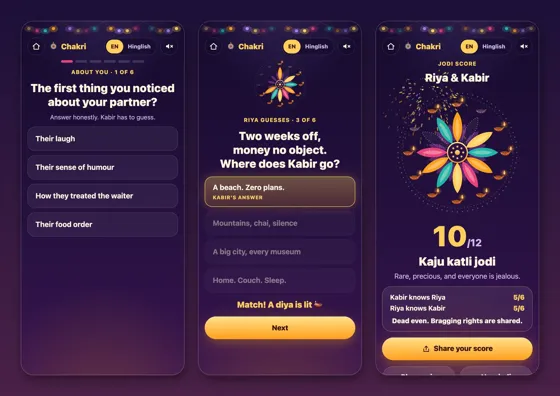
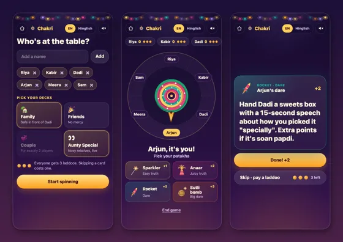
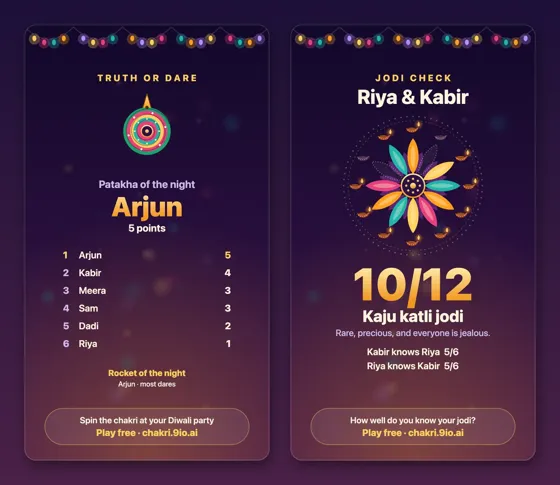

How to play Chakri
Chakri is a free party game from 9io that you play in a phone's browser, on one phone passed around the room. We made it for Diwali night, 8 November 2026. It has two games: Jodi Check, a 12-question quiz for two, and Chakri Truth or Dare, for 2 to 12 players with the phone in the middle. There's no app to install and no sign-up, and nothing a player types leaves the phone.
This guide covers the rules of both games, the decks, the result cards, the Hinglish switch and sound, with tips from the rules and answers to common questions. It also says which parts suit a wedding, a New Year's Eve party or any other get-together.
Play Chakri| Jodi Check | Chakri Truth or Dare | |
|---|---|---|
| Players | 2 | 2 to 12 |
| Length | 12 questions, six about each player | As long as you like, until someone taps End game |
| The phone | Passed between the two players | Flat in the middle, where everyone can see it |
| Scoring | A diya for every right guess | Points for every truth or dare you do |
| At the end | A title, the rangoli and a card to share | The Patakha of the night, the scores, awards and a card |
How to play Jodi Check
Jodi Check asks "How well do you really know each other?" Two players share one phone for 12 questions. One answers six questions about themselves in secret, the other guesses each answer, and then you swap.
- Choose your jodi. Couple is for partners, newlyweds and the newly engaged, Siblings is labelled "Bhai Dooj ready", Best friends is for friends since forever, and Family covers parent and kid, in-laws and cousins. Five of the 12 questions come from that jodi's own set and seven from the questions for everyone.
- Type both names. The first name answers first. A name left blank becomes Player 1 or Player 2.
- Answer six questions in secret. The screen tells the other player, by name, to look away. Each question has four answers, and you tap the one that's true for you. If you tap the wrong one, "Change my last answer" takes you back a question.
- Pass the phone. After the sixth answer the game asks you to hand the phone over, and from then on the player who answered can watch.
- Guess each answer. The guesser gets the same six questions about the other player, with the same four answers to pick from. A match lights a diya in the rangoli, and a miss shows what the other player really said.
- Swap at halfway. The game shows the first score out of 6, and the two of you swap roles for six more questions.
- Finish the rangoli. Twelve lit diyas complete it. The result shows your score out of 12, a title, and how many each of you got right about the other. The better guesser wins bragging rights, and a tie means they're shared.
Play again keeps the same jodi and deals new questions, because the phone puts the ones you've had recently at the back. New jodi goes back to the start for the next pair.
| Score | Title | What the game says |
|---|---|---|
| 12 | Made in the same factory | Every single diya lit. Frankly, suspicious. |
| 10 or 11 | Kaju katli jodi | Rare, precious, and everyone is jealous. |
| 7 to 9 | Gulab jamun jodi | Sweet, a little syrupy, very solid. |
| 4 to 6 | Soan papdi jodi | Passed around for years. Never actually opened. |
| 1 to 3 | Same Wi-Fi, different worlds | You share a password. That's about it. |
| 0 | Strangers at the same party | Introduce yourselves. Then play again. |

How to play Chakri Truth or Dare
Chakri Truth or Dare is for 2 to 12 players. Put the phone flat in the middle, where everyone can see it.
- Add the players. Type each name and tap Add. You need at least two, and the table is full at twelve. If two people share a name, the second gets a number, like Riya 2.
- Pick your decks. Switch on any mix of Family, Friends, Couple and Aunty Special. Couple only opens when exactly two people play.
- Spin the chakri. Swipe it, or tap Spin. A tap, a slow drag and a hard fling all spin it, and a fling spins it harder. It crackles, ticks past the names, sprays sparks and stops on someone.
- Pick a patakha. The player it stops on picks one of four firecrackers, from an easy truth to a big dare, and a card comes up with their name on it. Some cards bring in a second player, picked at random.
- Do it, or pay a laddoo. Tap Done to take the points, or Skip to pay one of your three laddoos. With none left, the game says "No laddoos left. You have to do it!"
- End the game when the night is done. There's no fixed number of rounds. When you're ready to stop, someone taps End game.
| Patakha | What you get | Points |
|---|---|---|
| Sparkler (Phuljhadi in Hinglish) | An easy truth | 1 |
| Anaar | A juicy truth | 2 |
| Rocket | A dare | 2 |
| Sutli bomb | A big dare | 3 |
How the chakri picks the next player
The game decides who's next before the wheel moves, and the spin only carries it there, so a clever swipe can't aim at anyone. It never picks the same player twice running, so with two players the turns alternate. Anyone who has had fewer turns is likelier to come up: a player one turn ahead of the fewest is a third as likely to be picked, and a player two turns ahead a fifth as likely. A skip counts as a turn.
Cards don't repeat
Each patakha has its own shuffled pile, made from the decks you switched on. A card won't come up twice in a game until every card in that pile has been played.
The end of the night: scores and awards
End game shows the Patakha of the night, the player with the most points. A tie goes to whoever has more laddoos left, and then to whoever skipped less. Below that come everyone's scores and up to three awards, and each award appears only when one player clearly earned it.
| Award | Who gets it |
|---|---|
| Rocket of the night | The player who did the most dares |
| Laddoo lover | The player who skipped the most |
| Laddoo hoarder | The only player who never skipped, after at least two turns |
If someone taps End game too early, Keep playing goes back to the chakri with the scores as they were. Play again starts a new game with the same players, and New players goes back to the names.

The four decks
Chakri Truth or Dare has 176 cards in four decks, each in English and Hinglish, and each deck's cards are split evenly across the four patakhas. The first time you open the game, Family and Aunty Special are switched on, and the phone remembers your choice after that.
- Family, "Safe in front of Dadi"
Play a cushion like a dholak (drum) and sing 20 seconds of any festive song. Everyone claps along.
- Friends, "No mercy"
Which Bollywood dialogue do you quote way too often?
- Couple, "A little spicy, just the two of you"
What did you almost say on your first date or first meeting, but didn't?
- Aunty Special, "Nosy relatives, live"
Beta, can you cook? Name one dish you can actually make without calling home.
No dare in any deck involves fire, firecrackers, diyas, drink, smoke, going outside or messaging anyone outside the room. The Couple deck is flirty, never explicit, and its dares that involve a touch, like a hug or a slow dance, say "if they're up for it".
Playing after Diwali: weddings, New Year's Eve and family get-togethers
We wrote Chakri for Diwali, and plenty of it says so. The rules work for any gathering, but the questions and cards vary in how much they talk about the festival. We counted the ones that name Diwali in the game's files on 27 November 2026.
| Set | In the set | Name Diwali |
|---|---|---|
| Jodi Check, questions for everyone | 32 | 17 |
| Jodi Check, Couple | 14 | 9 |
| Jodi Check, Siblings | 12 | 2 |
| Jodi Check, Best friends | 12 | 8 |
| Jodi Check, Family | 12 | 9 |
| Truth or Dare, Family | 48 | 27 |
| Truth or Dare, Friends | 48 | 20 |
| Truth or Dare, Couple | 40 | 12 |
| Truth or Dare, Aunty Special | 40 | 10 |
- Aunty Special travels best. Most of its cards are the questions relatives ask at any family function, about marriage, jobs, marks and cooking, which makes it a good fit for a wedding evening.
- The Siblings jodi leans least on Diwali in Jodi Check, although three of its questions are about Bhai Dooj gifts and one about childhood firecrackers.
- A Couple game of Jodi Check is about half Diwali. Seven of the 12 questions come from the set for everyone, so expect several about the festival whichever jodi you pick. They play well as questions about how you spent this year's.
- Of the four decks, Family leans on Diwali most, though its cards without the festival, like the dholak dare above, are easy for a grandparent to join in with.
- The result cards mention Diwali too. The Truth or Dare card says "Spin the chakri at your Diwali party", and its share message starts "Diwali night".
For game ideas around Chakri, read Indian wedding party games for sangeet, mehndi and haldi and Party games on one phone, which includes a plan for New Year's Eve.
Result cards and sharing
Both games end with a result card of 1080 × 1920 pixels, the shape of a phone story. The phone draws it itself, so nothing is uploaded to make it. The Jodi Check card shows both names, the rangoli, the score out of 12, the title and who knows whom. The Truth or Dare card shows the Patakha of the night, the top six scores and the awards. Both carry the game's address at the bottom.
Tap "Share your score" in Jodi Check or "Share the night" in Truth or Dare to see the card. Share opens the phone's own share sheet, with the picture attached when the browser can share files. Send on WhatsApp opens WhatsApp with a short message and the link, without the picture. Save image keeps the card on the phone, and Copy text copies the message.

Hinglish, sound and the back button
The EN and Hinglish switch at the top of every screen changes the whole game, from the buttons to the questions, cards and result titles. Hinglish here means Hindi and English mixed together and written in Roman letters, and every line is written so it doesn't assume a player's gender. The phone remembers your choice.
| English | Hinglish |
|---|---|
| Spin the chakri. Pick your patakha. No backing out. | Chakri ghumao. Patakha chuno. Peeche hatna mana hai. |
| Everyone gets 3 laddoos. Skipping a card costs one. | Sabko 3 laddoo milenge. Card skip karne ka ek laddoo. |
| Safe in front of Dadi | Dadi ke saamne bhi safe |
| Patakha of the night | Raat ka Patakha |
Every sound is made in the browser with Web Audio. The speaker button at the top turns sound and vibration on or off, and the phone remembers that too. Sound starts with your first tap, since browsers don't play any before one. If the phone is set to reduce motion, the fireworks calm down and the chakri makes one short turn.
The phone's back button takes you home from any screen, and during a game it asks "Leave this game?" first.
Tips from the rules
- Answer Jodi Check honestly. Only matches light diyas, so a joke answer costs your partner a point.
- Keep your laddoos. A skip scores nothing, and a tie for Patakha of the night goes to whoever has more laddoos left.
- Chase Rocket of the night with dares. A Rocket scores the same 2 points as an Anaar, and only dares count towards the award.
- Don't skip to dodge the chakri. A skip uses up your turn, and the chakri counts it like any other.
- Use short names in a big group. With 9 to 12 players, names longer than seven letters are shortened on the wheel, and with 6 to 8 players, names longer than nine.
- Choose decks for the room. Play Family on its own when grandparents or children join in, add Aunty Special for a room of cousins, and save Couple for when it's just the two of you.
- Set up before the guests arrive. The phone remembers the last names, decks and jodi you used, so the first game starts faster.
Questions
Is Chakri free?
Yes. Chakri is free to play at chakri.9io.ai. There are no ads, no sign-up and nothing to buy.
Do we need to download an app to play Chakri?
No. Chakri runs in the phone's web browser. Open chakri.9io.ai on one phone and pass it around.
How many people can play Chakri?
Jodi Check is for two players. Chakri Truth or Dare takes 2 to 12, with the phone in the middle, and its Couple deck opens only when exactly two people play.
How does Chakri choose who goes next?
The game picks the next player before the chakri starts to spin. It never picks the same player twice running, and anyone who has had fewer turns is likelier to come up, so turns stay even without anyone keeping count.
What happens if you skip a card in Chakri Truth or Dare?
A skip costs one of your three laddoos, scores nothing and still counts as your turn. With no laddoos left, you have to do the card.
Can we play Chakri at a wedding or on New Year's Eve?
Yes. We wrote Chakri for Diwali and many cards say so, but Jodi Check works for any two people, and only 10 of the 40 Aunty Special cards name Diwali. The Family deck leans on the festival most, with 27 of its 48 cards.
Is Chakri OK to play with family and kids?
Choose the Family deck, which is written to be safe in front of grandparents. No dare in any deck involves fire, firecrackers, drink, smoke or going outside, and the Couple deck only opens when exactly two people play.
Can we play Chakri in Hindi?
Tap Hinglish at the top and every question, card and button switches to Hinglish, which mixes Hindi and English in Roman letters. There's no Devanagari version.
Does Chakri keep our names or answers?
Nothing a player types leaves the phone. The browser on that phone remembers the language, the sound setting, the last names typed, the chosen decks or jodi and recently played questions, so the next game starts faster. Jodi Check answers aren't saved.
How do we share a Chakri result?
At the end of a game, tap Share your score in Jodi Check or Share the night in Truth or Dare. You get a story-sized card to share, send on WhatsApp or save, and a message you can copy.
More to read
- Indian wedding party games for sangeet, mehndi and haldi
- Party games on one phone: pass-the-phone games and how to host them
- Chakri: a free Diwali party game you play on one phone
- Diwali truth or dare: 60 questions and dares
- How well do you know me? 40 Diwali questions for couples and siblings
Play Chakri · Chakri is a free game from 9io. Writing about it? See the press kit.